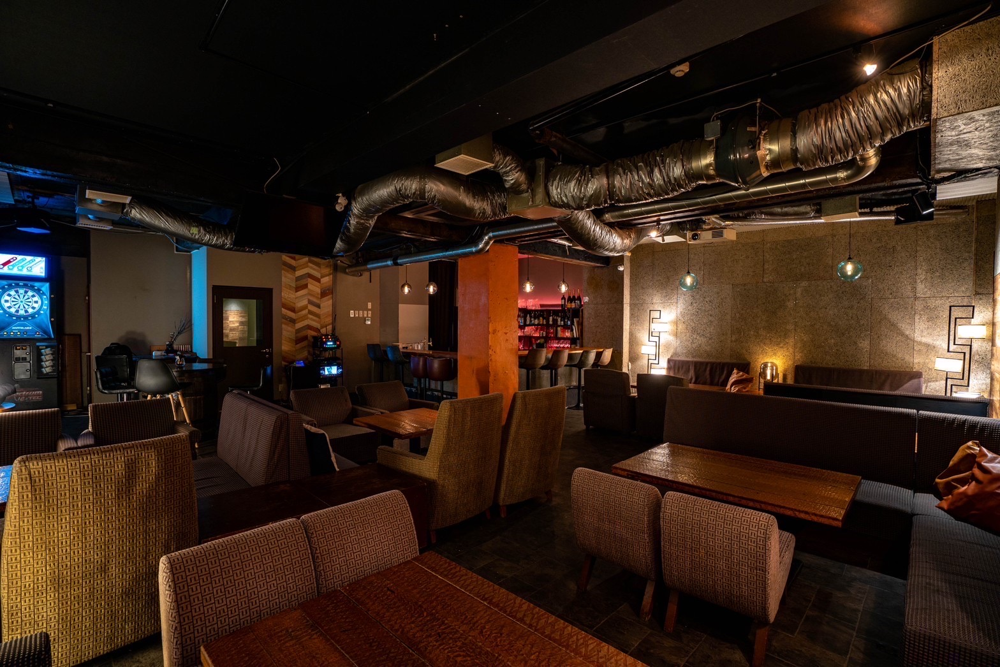
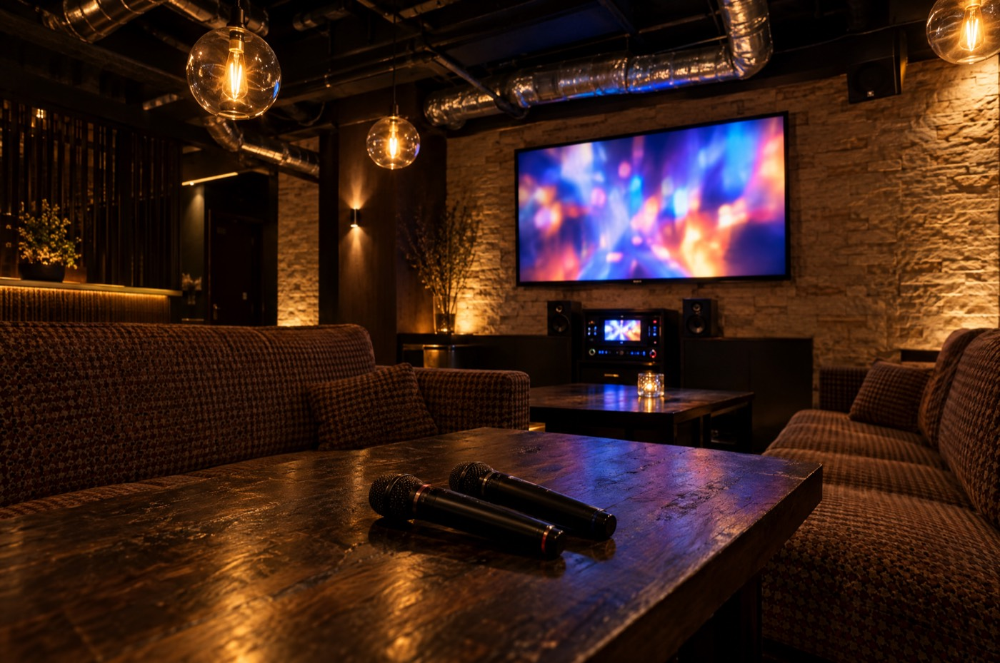
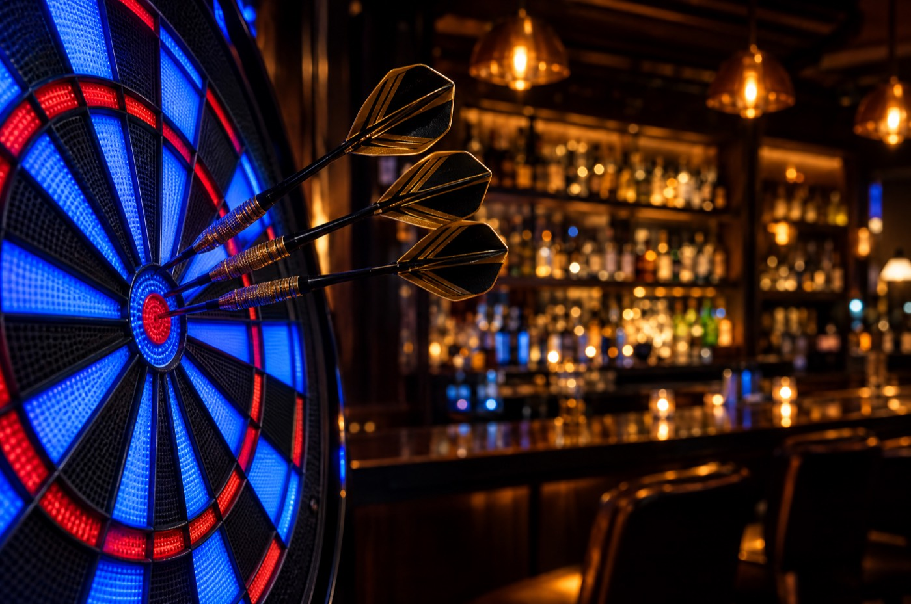

貸切・パーティーPrivate Parties
たいせつな夜を、
貸切でも。For your special night,
the whole bar can be yours.
誕生日や記念日、歓送迎会、二次会まで。
BAR POCHIを丸ごと貸切でもご利用いただけます。
最大50名様までご案内できますので、団体でのご利用もお気軽にご相談ください。
Birthdays, anniversaries, farewell parties and after-parties —
you can even book the whole of BAR POCHI.
We can host up to 50 guests, so groups are always welcome.

貸切・団体・二次会にPrivate parties · Groups · After-parties
最大50名様までご案内可能Up to 50 guests — we can host your whole party
- カウンター 10席10 counter seats
- ソファ 7席7 sofa seats
- 貸切・団体で最大50名様Up to 50 for groups & private hire
お時間の
ご相談OKFlexible
hours
貸切の場合は、ご利用時間のご相談が可能です。ご希望のお時間をお知らせください。
When you book the whole bar, the hours are flexible. Just tell us when you'd like it.
日曜日も
営業OKOpen on
Sundays
定休日の日曜日も、ご相談いただければ営業いたします。
We're usually closed on Sundays, but just ask — we can open for you.
カラオケ・ダーツ完備Karaoke & Darts

仲間と思いきり歌って、盛り上がれます。
Sing your heart out with friends.

お酒を片手に、気軽にダーツを。
Throw a few darts with a drink in hand.
※画像はイメージです*Images are for illustration only.
貸切・団体のご相談Private hire & groups
貸切・団体のご予約やご相談は、Instagram の DM または予約フォームからお気軽にどうぞ。
For private hire and group bookings, send us a DM on Instagram or use the reservation form.
忘れられない夜を、
BAR POCHI で。An unforgettable night
at BAR POCHI.